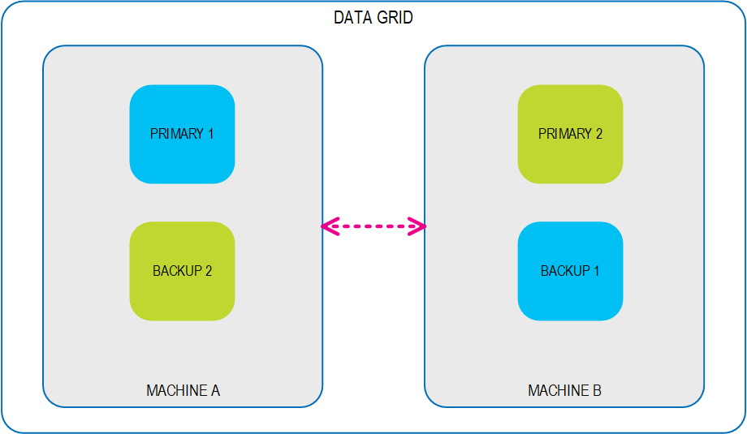
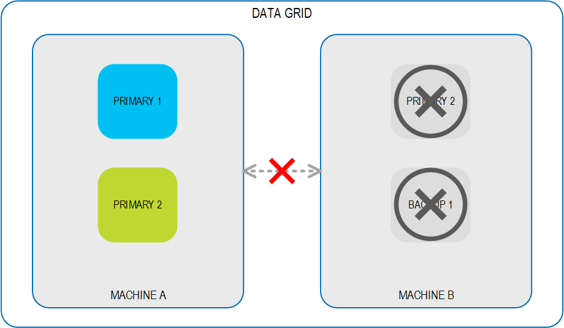
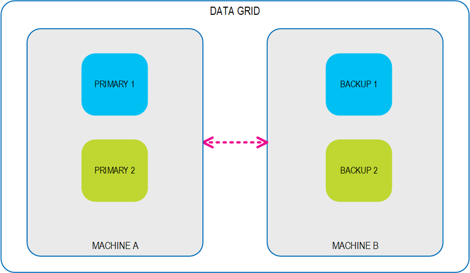

The Demote API in the REST Manager enables users to rebalance a system after significant environment change scenarios, such as failover or scaling. Without this capability, the only way to demote a primary instance in order to rebalance a system is to force a restart, which requires downtime until the new primary is up and running, and until the backup fully recovers.
For example, a properly balanced data grid that is configured for high availability will allocate its primary and backup instances across the host machines so that each backup is hosted on a different machine than its associated primary instance, and careful resource planning will also ensure that the primary and backup instances are distributed equitably across the host machines. This configuration provides the required reliability along with the most efficient use of resources.

If the connection to a host machine is lost due to planned circumstances such as maintenance, or due to unplanned circumstances such as network failure, any primary instance on the affected host machine fails over to its backup instance, which gets promoted to a primary instance so the data grid can continue to function normally. System health has been affected but at this point, performance remains as expected.

When the connection is restored and the affected host machine is back online, the data grid's built-in auto-recovery mechanism ensures that all the planned instances are restored, so that each primary has a backup that is running on a separate host machine. However, without an active rebalancing policy in place, the instances are no longer distributed equitably across the host machines and system health is only partially restored.

Customers can use the Demote capability when writing their rebalancing policies, leveraging the ability to perform a hot swap during runtime. Without the need to take instances down during the rebalancing effort, system performance can remain at peak and system health can easily be fully restored.
For instructions on how to demote a Space instance, see the section on Demoting a Primary Space Instance in the Advanced Maintenance Activities topic.